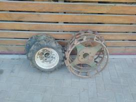

Welcome to ratai
Ratai 2 / Cars 2 (2011) Online
2020.10.29 07:59Pradžia Filmai Pagal metus: 2020 2019 2018 2017 2016 2015 Pagal šalį: USA UK LTU Biografiniai Veiksmo Vesternai Komedijos Romantiniai Dramos Serialai Animacija Animaciniai serialai Treileriai Rinkiniai Тop 10/100 а b c č d e f g h i y j k l m n o p r s š t u ū v z ž 0
Mano žymės
Visos žymėsStebėjimo sąrašas
Žiūriu Žiūrėsiu Jau žiūrėjau Sveiki, SvečiasPopuliarios paieškos
Įvertinimas: 7.7 281 7.7 /10Parduotas gyvenimas (1 Sezonas)
Serialai, Dramos 2014, 2019. 20 min. Parduotas gyvenimas (1 Sezonas) WEBRip Įvertinimas: 8.0 155 8.0 /10Likimo karuselė (1 Sezonas)
Serialai, Dramos, Komedijos, Romantiniai 2014. 20 min. Likimo karuselė (1 Sezonas) WEBRip Įvertinimas: 7.9 115 7.9 /10Lemties vingiai (1 Sezonas)
Serialai, Dramos 2017. 20 min. Lemties vingiai (1 Sezonas) WEBRip Įvertinimas: 8.0 80 8.0 /10Baltas melas (1 Sezonas)
Serialai, Komedijos, Romantiniai 2019. 43 min. Baltas melas (1 Sezonas) WEBRip Įvertinimas: 8.4 75 8.4 /10365 dienos
Filmai, Dramos, Romantiniai 2020. 1 val 54 min. 365 dienos WEBRip Įvertinimas: 7.6 75 7.6 /10Kai mes susitikom 2
Filmai, Dramos, Romantiniai 2020. 1 val 45 min. Kai mes susitikom 2 WEBRip Įvertinimas: 8.0 68 8.0 /10Tikroji žvaigždė (1 Sezonas)
Serialai, Dramos, Komedijos, Romantiniai 2015. . Tikroji žvaigždė (1 Sezonas) WEBRip Įvertinimas: 7.8 68 7.8 /10Troliai 2
Animacija, Komedijos, Muzikiniai, Nuotykių, Šeimai, Fantastiniai 2020. 1 val 30 min. Troliai 2 BDRip Įvertinimas: 8.0 66 8.0 /10Laukinis miestas (1 Sezonas)
Serialai, Dramos 2019. 2 val. Laukinis miestas (1 Sezonas) WEBRip Įvertinimas: 7.5 70 7.5 /10Balta - Meilės spalva (1 Sezonas)
Serialai, Dramos, Romantiniai 2015. 25 min. Balta - Meilės spalva (1 Sezonas) WEBRip Įvertinimas: 7.8 66 7.8 /10Paskolinta meilė (1 Sezonas)
Serialai, Komedijos, Romantiniai 2015. 44 min. Paskolinta meilė (1 Sezonas) WEBRip Įvertinimas: 7.9 55 7.9 /10Našlaitės (2 Sezonas)
Serialai, Dramos 2016. . Našlaitės (2 Sezonas) WEBRip Įvertinimas: 7.8 56 7.8 /10Mano pirmasis bučinys 2
Filmai, Komedijos, Romantiniai 2020. 2 val 14 min. Mano pirmasis bučinys 2 WEBRip Įvertinimas: 8.7 46 8.7 /10Greiti ir įsiutę 9
Filmai, Trileriai, Veiksmo, Nuotykių, Kriminaliniai, Greitai matysite 2020. 2 val 15 min. Greiti ir įsiutę 9 Treileris Kinas.tv Animacija Ratai 2 / Cars 2 (2011) Grįžti atgalRatai 2
Cars 2 10-03-2018, 14:30 Постер к Ratai 2 / Cars 2 (2011) Treileris Stebėjimo sąrašasRatai 2
Cars 2 10-03-2018, 14:30 100 1 2 3 4 5 (10.0) BDRip «1h 46min» Metai: 2011 Šalis: USA Kolekcijos: kolekcija nepriskirta Žiūrovų įvertinimas 10.0 1 IMDB 6.2 (117,514 balsų) Režisierius: John Lasseter, Brad Lewis Aktoriai: Larry the Cable Guy, Owen Wilson, Michael Caine, Emily Mortimer, Eddie Izzard, John Turturro Kalba: Lietuvių (Profesionalus, vienbalsis) Animacija , Komedijos , Nuotykių , Šeimai Aprašymas: Vienas geriausių 2006-ųjų filmų, net dviems Oskarams nominuotas ir Auksinį Gaublį iškovojęs animacinis nuotykių filmas visai šeimai „Ratai" (orig. „Cars") su trenksmu grįžta į didžiuosius kino ekranus ir yra pasirengęs antrąkart džiuginti mažuosius ir jų tėvelius nuostabia animacija, puikiu scenarijumi, įspūdingu garso takeliu ir prie ekrano prikaustančiu veiksmu. Kaip ir pirmoji filmo dalis, taip ir „Ratai 2" neabejotinai taps vienu žiūrimiausių metų animacinių filmų.Lenktyninis automobilis Žaibas Makvinas (įgarsina akt. Owen Wilson) ir jo draugas, vilkikas Brolis (įgarsina akt. Larry the Cable Guy) leidžiasi į nepaprastą nuotykį. Mašinos nusprendžia dalyvauti svarbiausiose ir prestižiškiausiose pasaulinėse Grand Prix lenktynėse, kuriose paaiškės greičiausias pasaulio automobilis.Tačiau žavingųjų mašinyčių laukia ilgas ir kupinas netikėtumų kelias iki varžybų. Vilkikas Brolis netikėtai atsiskleidžia kaip tarptautinis šnipas! Asistuodamas Žaibui Makvinui, kuriam teks varžytis su geriausiais iš geriausių pavojingose ir grožiu pritrenkiančiose Japonijos, Prancūzijos ir Italijos trasose bei vykdydamas ypatingai slaptą misiją, Brolis ir jo draugas nė nenutuokia, jog visai netrukus atsidurs pačiame painaus šnipų sąmokslo centre.Žiūrėti Ratai 2 / Cars 2 (2011) online
Playeris #1 Playeris #2 UŽGESINTI ŠVIESĄ Komentarų 0 Pažymėti Atžymėti Pasidalinti NeveikiaPopuliarūs šioje kategorijoje
Šerlokas Gnomsas
Animacija, Komedijos, Nuotykių, Šeimai, Fantastiniai 80 1 2 3 4 5 2018. 1 val 26 min Šerlokas Gnomsas BDRip Įvertinimas: 8.0 1 8.0 /10 Šerlokas Gnomsas 13-10-2020, 14:39 Šerlokas Gnomsas Metai: 2018 Šalis: UK, USA, India, Canada, France, Belgium Režisierius: John Stevenson Aktoriai: Kelly Asbury, Mary J. Blige, Emily Blunt, Julio Bonet, Gary Bradbury, Michael Caine, Gang Chi, Rosalie Craig, Jamie Demetriou, Johnny Depp Kalba: Lietuvių (Profesionalus, vienbalsis) Sherlock Gnomes (Johnny Depp) and his assistant, Dr. Gnome Watson (Chiwetel Ejiofor), storm into Londons natural history museum, where their nemesis, a pie mascot named Moriarty (Jamie Demetriou), is... Animacija , Komedijos , Nuotykių , Šeimai , Fantastiniai Žiūrėti online 0 263 13-10-2020, 14:39Pirmyn
Animacija, Komedijos, Nuotykių, Šeimai, Fantastiniai 80 1 2 3 4 5 2020. 1 val 42 min Pirmyn BDRip Įvertinimas: 8.1 40 8.1 /10 Pirmyn 20-07-2020, 08:51 Pirmyn Metai: 2020 Šalis: USA Režisierius: Dan Scanlon Aktoriai: Tom Holland, Chris Pratt, Julia Louis-Dreyfus, Octavia Spencer, Mel Rodriguez, Kyle Bornheimer, Lena Waithe, Ali Wong, Grey Griffin, Tracey Ullman Kalba: Lietuvių (Dubliuotas) Šiame fantazijų pasaulyje žmonės neegzistuoja. Čia gyvena elfai, troliai ir fėjos, o vienaragiai yra tokie pat įprasti, kaip šiandien katinai kieme. Vieną dieną, du broliai elfai – Barlis ir Ianas –... Animacija , Komedijos , Nuotykių , Šeimai , Fantastiniai Žiūrėti online 0 6 184 20-07-2020, 08:51Saugokis meškinų. Filmas
Animacija, Komedijos, Nuotykių, Šeimai 80 1 2 3 4 5 2020. 1 val 9 min Saugokis meškinų. Filmas WEBRip Įvertinimas: 8.4 9 8.4 /10 Saugokis meškinų. Filmas 28-06-2020, 06:03 Saugokis meškinų. Filmas Metai: 2020 Šalis: USA Režisierius: Daniel Chong Aktoriai: Eric Edelstein, Bobby Moynihan, Demetri Martin, Marc Evan Jackson, Patton Oswalt, Charlyne Yi, Cameron Esposito, Jason Lee, Sam Lavagnino, Max Mitchell Kalba: Lietuvių (subtitrai) Grizlis, panda ir baltasis lokys keliauja į Kanadą su nuotykiais po to, kai agentas iš Nacionalinės laukinės gamtos kontrolės departamento bando nutraukti jų linksmybes... Animacija , Komedijos , Nuotykių , Šeimai Žiūrėti online 0 1 551 28-06-2020, 06:03Orientacijos diena
Animacija, Komedijos, Nuotykių, Šeimai, Fantastiniai 80 1 2 3 4 5 2010. 4 min Orientacijos diena BDRip Įvertinimas: 7.1 20 7.1 /10 Orientacijos diena 20-05-2020, 07:17 Orientacijos diena Metai: 2010 Šalis: USA Režisierius: Kyle Balda,Samuel Tourneux Aktoriai: Pierre Coffin, Rob Huebel Kalba: Lietuvių (Profesionalus, vienbalsis) Kai baudžiamasis Mastermaindas naudoja retųjų mergaičių trio kaip pėstininkus dėl didžiosios schemos, jis randa savyve visiškai pakeitusius didėjančius meilės jausmus tarp jų.... Animacija , Komedijos , Nuotykių , Šeimai , Fantastiniai Žiūrėti online 0 2 356 20-05-2020, 07:17Snieguotos lenktynės
Animacija, Komedijos, Nuotykių, Šeimai 80 1 2 3 4 5 2018. 1 val 29 min Snieguotos lenktynės BDRip Įvertinimas: 8.3 6 8.3 /10 Snieguotos lenktynės 18-04-2020, 17:55 Snieguotos lenktynės Metai: 2018 Šalis: Canada Režisierius: Benoît Godbout,Jean-François Pouliot,François Brisson Aktoriai: Sonja Ball, Hélène Bourgeois Leclerc, Mehdi Bousaidan, Sophie Cadieux, Anne Casabonne, Hugolin Chevrette-Landesque, Marguerite Damour, Lucinda Davis, Tod Fennell, Noel Fisher Kalba: Lietuvių (Dubliuotas) Vos tik pasninga mažas kalnų kaimelis tampa tikra lenktynių rogutėmis trasa, kurioje savo jėgas nori išbandyti visi vaikai. Lenktynių sumanytojas Frankis – „Keturios akys“ apie tokią trasą svajojo... Animacija , Komedijos , Nuotykių , Šeimai Žiūrėti online 0 695 18-04-2020, 17:55Žaislų istorija 4
Animacija, Komedijos, Nuotykių, Šeimai, Fantastiniai 80 1 2 3 4 5 2019. Žaislų istorija 4 BDRip Įvertinimas: 8.7 23 8.7 /10 Žaislų istorija 4 2-03-2020, 12:10 Žaislų istorija 4 Metai: 2019 Šalis: USA Režisierius: Josh Cooley Aktoriai: Jordan Peele, Patricia Arquette, Tom Hanks, Keanu Reeves, Tim Allen, Michael Keaton, Bonnie Hunt, Keegan-Michael Key, Laurie Metcalf, Joan Cusack Kalba: Lietuvių (Profesionalus, vienbalsis) Praėjus daugiau nei 20 metų po pirmosios „Žaislų istorijos“ (orig. „Toy Story“), mylimi žaislai grįžta į didųjį kiną pristatydami jau ketvirtosios animacinės nuotykių komedijos visai šeimai anonsą,... Animacija , Komedijos , Nuotykių , Šeimai , Fantastiniai Žiūrėti online 0 2 689 2-03-2020, 12:10Panašūs
Ratai
Animacija, Komedijos, Šeimai 100 1 2 3 4 5 2006. 1h 57min Ratai / Cars (2006) BDRip Įvertinimas: 10.0 2 10.0 /10 Ratai 10-03-2018, 14:30 2019 год Metai: 2006 Šalis: USA Režisierius: John Lasseter, Joe Ranft Aktoriai: Owen Wilson, Paul Newman, Bonnie Hunt, Larry the Cable Guy, Cheech Marin, Tony Shalhoub Kalba: Lietuvių (Profesionalus, vienbalsis) Tai naujas garsios animacijos studijos „Pixar", sukūrusios jau legenda tapusius filmus „Žaislų istorija", „Žuviukas Nemo", „Nerealieji", darbas. Nuotykių, fantazijos, emocijų ir juoko kupinas filmas... Animacija , Komedijos , Šeimai Žiūrėti online 0 11 532 10-03-2018, 14:30 Nužudyti Giunterį
Veiksmo, Komedijos, Filmai 0 1 2 3 4 5 2017. 1h 32min Nužudyti Giunterį / Killing Gunther (2017) WEBDL Įvertinimas: 0.0 0 0.0 /10 Nužudyti Giunterį 10-03-2018, 14:24 2019 год Metai: 2017 Šalis: USA Režisierius: Taran Killam Aktoriai: Arnold Schwarzenegger, Cobie Smulders, Hannah Simone, Taran Killam, Allison Tolman, Bobby Moynihan Kalba: Lietuvių (Mėgėjiškas, vienbalsis) Grupei keistų žudikų įgriso geriausias žudikas pasaulyje vardu Giunteris, todėl jie nusprendžia jį nužudyti, tačiau jų planas nepavyksta, nes Giunteris viskam pasiruošęs ir visada eina žingsniu... Veiksmo , Komedijos , Filmai Žiūrėti online 0 203 10-03-2018, 14:24 Toras. Pasaulių pabaiga
Veiksmo, Komedijos, Nuotykių, Filmai 100 1 2 3 4 5 2017. 2h 10min Toras. Pasaulių pabaiga / Thor: Ragnarok (2017) BDRip Įvertinimas: 10.0 1 10.0 /10 Toras. Pasaulių pabaiga 20-03-2018, 17:31 2019 год Metai: 2017 Šalis: USA Režisierius: Taika Waititi Aktoriai: Chris Hemsworth, Tom Hiddleston, Cate Blanchett, Idris Elba, Jeff Goldblum, Tessa Thompson Kalba: Lietuvių (Profesionalus, vienbalsis) Nelaisvėje, Sakkar planetoje, be savo kūjo kalintis Toras (akt. Chrisas Hemsworthas) vieną dieną išgirsta, kad Asgarde vyksta labai negeri dalykai – valdžią į savo rankas perima piktadarė Hela (akt.... Veiksmo , Komedijos , Nuotykių , Filmai Žiūrėti online 0 5 730 20-03-2018, 17:31 Suteneris
Komedijos, Kriminaliniai, Filmai 0 1 2 3 4 5 2010. 1h 30min Suteneris / Le mac (2010) BDRip Įvertinimas: 0.0 0 0.0 /10 Suteneris 9-03-2018, 17:45 2019 год Metai: 2010 Šalis: France Režisierius: Pascal Bourdiaux Aktoriai: José Garcia, Gilbert Melki, Carmen Maura, Arsène Mosca, Jo Prestia, Catalina Denis Kalba: Lietuvių (Profesionalus, vienbalsis) Jo vardas Žilberas Šapelis ir jis - sėkmingas bankininkas. Bet vieną dieną viskas apsiverčia aukštyn kojomis! Pasirodo, Žilberas turi brolį dvynį, kuris yra pavojingas nusikaltėlis ir suteneris.... Komedijos , Kriminaliniai , Filmai Žiūrėti online 0 204 9-03-2018, 17:45 Nevykusių pasimatymų kronikos
Komedijos, Romantiniai, Filmai 0 1 2 3 4 5 2017. 1h 24min Nevykusių pasimatymų kronikos / Bad Date Chronicles / Chronique des rendez-vous désastreux (2017) HDTV Įvertinimas: 0.0 0 0.0 /10 Nevykusių pasimatymų kronikos 9-03-2018, 17:45 2019 год Metai: 2017 Šalis: Canada Režisierius: Steven R. Monroe Aktoriai: Merritt Patterson, Justin Kelly, Lanie McAuley, Giles Panton, Gina Holden, Matt Bellefleur Kalba: Lietuvių (Profesionalus, vienbalsis) Linksma romantinė komedija apie nevykusius pasimatymus. Gerai žinoma žurnalistė Li turi svetainę, kurioje kiekvienas gali anonimiškai parašyti apie nesėkmingą pasimatymą. Kitas tinklaraščių autorius... Komedijos , Romantiniai , Filmai Žiūrėti online 0 294 9-03-2018, 17:45 Nevykusi diena
Komedijos, Nuotykių, Šeimai, Filmai 0 1 2 3 4 5 2015. 1h 27min Nevykusi diena / Bad Hair Day (2015) WEBDL Įvertinimas: 0.0 0 0.0 /10 Nevykusi diena 9-03-2018, 17:45 2019 год Metai: 2015 Šalis: Canada Režisierius: Erik Canuel Aktoriai: Laura Marano, Leigh-Allyn Baker, Christian Campbell, Alain Goulem, Christian Paul, Kiana Madeira Kalba: Lietuvių (Profesionalus, vienbalsis) Monika svajoja tapti išleistuvių karaliene. Susiruošia viską iš vakaro, tačiau išaušus didžiajai dienai tenka skaudžiai nusivilti – jos šukuosena tiesiog tragiška, suknelė sugadinta, batai – taip... Komedijos , Nuotykių , Šeimai , Filmai Žiūrėti online 0 360 9-03-2018, 17:45Panašūs kaip «Ratai 2»
Pavažinėtos mašinos
Komedijos, Filmai 1980. 1val. 53min. Pavažinėtos mašinos / Used Cars (1980) BDRipIšgelbėti poną Benksą
Dramos, Komedijos, Biografiniai, Filmai 2013. 2val. 5min. Išgelbėti poną Benksą / Saving Mr. Banks (2013) BDRipMonstrų ratai
Animacija, Veiksmo, Nuotykių, Filmai 2016. 1h 44min Monstrų ratai / Monster Trucks (2016) BDRipKung Fu Panda 2
Animacija, Veiksmo, Nuotykių 2011. 1h 30min Kung Fu Panda 2 (2011) BDRipRatai 3
Animacija, Komedijos, Nuotykių 2017. 1h 40min. Ratai 3 / Cars 3 (2017) BRRipRatai
Animacija, Komedijos, Šeimai 2006. 1h 57min Ratai / Cars (2006) BDRipKomentuoti
0 InformacijaMielas lankytojau. Jūs čia esate kaip neregistruotas vartotojas.
Mes siūlome jums užsiregistruoti arba tiesiog prisijungti naudojant savo prisijungimo duomenis, tam, kad galėtum įkelti bei komentuoti norimas naujienas. K Nėra komentarų
Būk pirmasis pakomentavęs Treileris: Ratai 2
(C) 2020 Copyright - "KINAS.TV" - tai filmų online svetainė, kurioje galite nemokamai žiūrėti savo mėgstamus ir populiaraisius filmus ir serialus. Tai itin patogu, be to, greita ir patikima.
Copyright © 2020 kinas.tv Taisyklės Pagalba Kontaktai